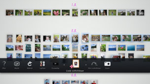

Soittolistan luominen valituista valokuvista
Voit valita valokuvat, joista muodostetaan soittolista. Soittolistan avulla voit näyttää valitut valokuvat aina samassa järjestyksessä.
Soittolistan luominen
1. |
Valitse [Kirjastoalue]-kohdasta soittolistaan lisättävä valokuva, paina  |
||||||||||||
|---|---|---|---|---|---|---|---|---|---|---|---|---|---|
2. |
Siirry vasemmalla sauvalla tyhjään [Soittolista-alue]-kohtaan ja paina sitten |
||||||||||||
3. |
Tee seuraavat soittolistan asetukset.
|
 (Lisää soittolistaan).
(Lisää soittolistaan). -näppäintä.
-näppäintä.
 (Musiikki) -luokasta.
(Musiikki) -luokasta.Vihjeitä
- Soittolistan asetuksia voi myöhemmin muuttaa kohdassa
 (Muokkaa).
(Muokkaa). - Kullakin soittolistalla voi olla eri asetukset.
Valokuvien lisääminen soittolistaan
1. |
Valitse soittolistaan lisättävät valokuvat, paina |
|---|---|
2. |
Valitse soittolista ja paina |
Soittolistan asetusten muokkaaminen
Voit muokata soittolistan asetuksia. Valitse muokattava soittolista, paina  -näppäintä ja valitse sitten (Muokkaa).
-näppäintä ja valitse sitten (Muokkaa).
Soittolistan siirtäminen
Voit siirtää soittolistan toiseen paikkaan. Valitse siirrettävä soittolista, paina -näppäintä ja valitse sitten  (Siirrä). Voit siirtää soittolistaa käyttämällä vasenta sauvaa.
(Siirrä). Voit siirtää soittolistaa käyttämällä vasenta sauvaa.
Vihje
Voit siirtää soittolistaa myös valikkoa käyttämättä. Valitse soittolista, pidä  -näppäin painettuna ja siirrä soittolistaa vasemmalla sauvalla.
-näppäin painettuna ja siirrä soittolistaa vasemmalla sauvalla.
Soittolistan poistaminen
Jos haluat poistaa soittolistan, valitse poistettava soittolista, paina -näppäintä ja valitse  (Poista).
(Poista).